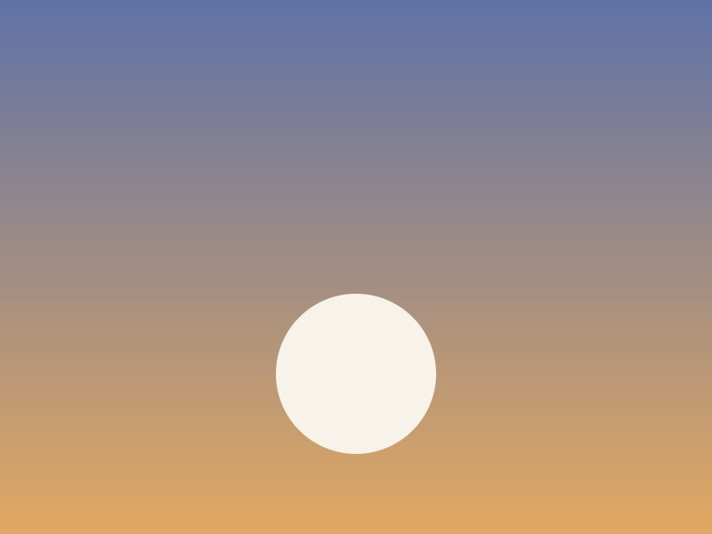

Things I saw

test photo from the upload tool — ignore me shot-1.jpga door in the Marigny
shot-1.jpga door in the Marigny shot-2.jpgBerlin, 6am, nobody awake
shot-2.jpgBerlin, 6am, nobody awake shot-3.jpgsomeone's excellent dog
shot-3.jpgsomeone's excellent dog shot-4.jpgthe good tomatoes
shot-4.jpgthe good tomatoes shot-5.jpgfog on the Elbe
shot-5.jpgfog on the Elbe shot-6.jpga cat that runs a bakery
shot-6.jpga cat that runs a bakery